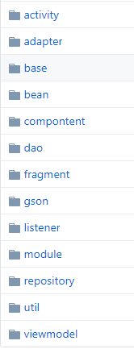
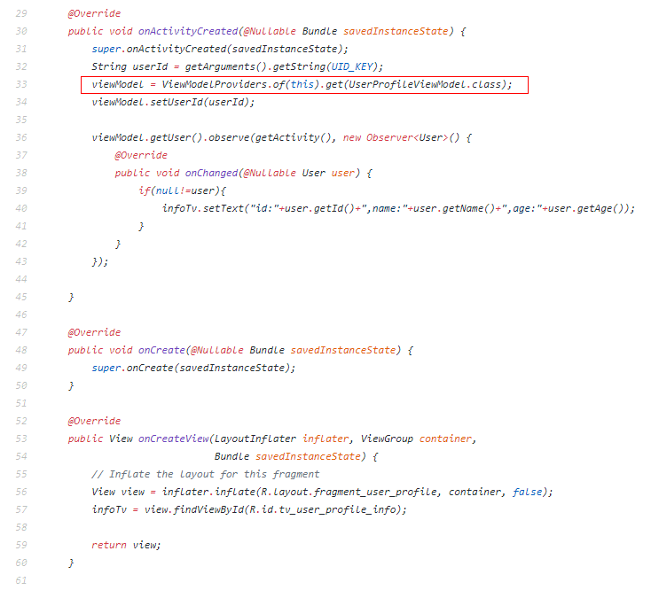
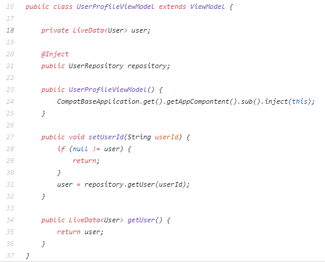

距离Google发布Android架构组件(简称ACC)1.0稳定版已经过去好几个月了，决定了解一下。它包含LifeCycle、LiveData、ViewModel和Room，每一个都够写一篇笔记了，这篇只写如何通过ACC+Dagger2+Retrofit2+RxAndroid构建一个完整的Android项目架构。
在我看来，ACC就是MVVM模式的进一步分解。MVVM模式中我们通过databinding组件实现，View和ViewModel之间的数据绑定，需要在xml中写databinding的绑定代码，view也很难达到复用，这样不是很优雅。ACC通过Lifecycles将生命周期从组件中独立出来管理，从而减少内存泄漏和崩溃的可能性；LiveData通过观察者模式，被View所观察，当数据有变化时，View及时更新，同时LiveData可感知生命周期，当View销毁时自动停止。ViewModel将数据和逻辑彻底从View隔离出来，直到View彻底销毁时才会消失；ROOM一款新的数据库管理软件，结合LiveData提供可观测数据库和感知生命周期的对象。
Android的生命周期一直是一个头疼的问题，它会随时被用户或者系统原因终止，生命周期不受开发者控制，，所以我们不能在activity/fragment中存储任何数据和状态，而且不能相互依赖。
架构原则:
关注点分离原则：任何不操作UI或者操作系统交互的代码都不应该在Activity/Fragment中。系统会在任何时候销毁他们，我们不应该太依赖它们。
数据驱动界面：Model负责处理数据，最好是数据持久化，这样：系统杀死APP时不会丢掉数据；没有网络时APP也能继续工作。 应该和View完全独立，这样Model和View的生命周期也就没有关系。
架构实现:
Activity/Fragment：View层，负责展示数据和接收监听事件
ButterKnife: View注入，消灭findViewById和各种监听事件注册。
ViewModel：业务逻辑和数据处理，接受View请求，并从Model获取数据。
LiveData：保存ViewModel从model层获取的数据，并提供给View观察。
Dagger2: 提供依赖注入。
Room，管理本地数据库
Retrofit2+RxAndroid,从网络获取数据。
代码结构包图：

Demo主要代码说明
1 View
View层包含：
/app/src/main/java/com/ilyzs/basecompat/fragment/UserProfileFragment.java
布局文件很简单省略，主要代码

核心代码已经标记出来，它的作用是将View和ViewModel关联起来。并通过ViewModel获取LiveData存储的数据对象，通过观察者模式更新界面。
2 ViewModel
ViewModel包含：
app/src/main/java/com/ilyzs/basecompat/viewmodel/UserProfileViewModel.java
主要代码：

通过Dagger2 将UserRepository对象注入，通过其获取数据，并封装为LiveData对象，供View观察、更新页面。
3 Component
Component 包含：
/app/src/main/java/com/ilyzs/basecompat/compontent/UserComponent.java
负责将UserModule管理的依赖注入到UserProfileViewModel中。
4 Module
Module 包含：
/app/src/main/java/com/ilyzs/basecompat/module/UserModule.java
负责给UserProfileViewModel 提供 需要注入的UserRepository对象
5 repository
repository 包含：
app/src/main/java/com/ilyzs/basecompat/repository/UserRepository.java
数据管理层，负责从sqllite或者网络获取数据。因为推崇单一数据源，所以推荐通过room从本地数据库获取数据返回，然后通过网络获取数据更新本地数据库。根据LiveData的特性，当数据库数据更新时，LivaData可感知到变化，从而通知观察它的View更新界面。
参考资料
https://developer.android.google.cn/topic/libraries/architecture/guide.html
http://chuckiefan.com/2017/06/07/翻译-安卓架构组件(1)-App架构指导.html